赵蕾 Millie
从国际关系研究走向 AI 赋能与公共倡导，
深耕生态人文、跨文化交流与人工智能的交叉领域。
目标对外交流／政策研究／项目管理
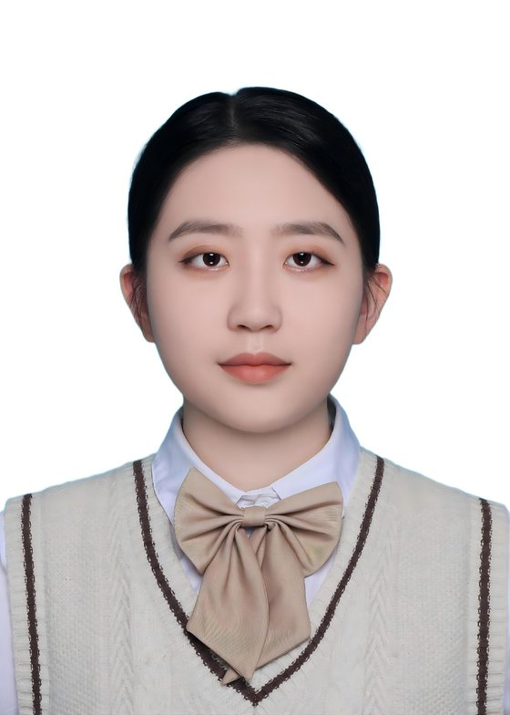
具备扎实的学术研究、政策分析与对外交流能力，学术成果见于 SSCI 期刊与《大洋洲蓝皮书》。实践曾服务于 WWF、UNV、无境深蓝、山水自然保护中心等国内外知名组织，现为 IYCGE 团队成员，入选 OMLAS 百万亚洲领袖计划，贯通研究、项目与跨国协作。
实地调研与项目现场
01 Education
教育背景
中山大学（985）｜ 硕士研究生
2024.09 - 2027.06国际政治专业 · 研究生一等奖学金 · 优秀项目（研学活动）主要负责人
- 研究领域：国际话语分析、区域研究（大洋洲，尤其关注澳大利亚和南太岛国）
- 核心课程：国际关系理论、国际关系研究方法、地缘政治格局与冲突研究、国际能源与环境政策研究、环境政治学、新闻学专题、大洋洲前沿问题研究、当代美国研究等。
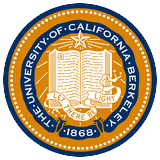
加州大学伯克利分校（UC Berkeley）｜ 暑期交流 2025.07 - 2025.09修读全英文学术课程 · 所修课程全 A
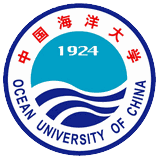
中国海洋大学（985）｜ 本科 2020.09 - 2024.06英语专业（辅修海洋历史文化）· 学习委员 · GPA 3.86/4（年级前 1%）
- 研究领域：话语分析、国家形象研究。
- 核心课程：语言学课程、英语专业训练（听说读写、笔译、口译、视译）、跨文化交际、海洋人文跨学科课程（中国海洋史、中国海疆问题研究、东亚海域交流史等）。
- 荣誉奖励：山东省优秀毕业生、优秀学生干部、优秀志愿者、「特殊学术专长」学生、德才奖学金及各类奖学金。
- 获奖证书：2022 年第一届国际大学生英语词汇挑战赛一等奖、2022 年第二届《英语世界》杯全国大学生翻译大赛二等奖、2022 年「外研社·国才杯」全国英语阅读大赛校级一等奖等。
校园干部经历
中山大学国际关系学院 中国外交思想研学社副社长
- 活动筹办和对外接待：组织和筹办习近平外交思想青年论坛、国家安全教育宣讲等活动，完成活动策划案，牵头协调各环节落地执行，保障活动从方案到现场有序推进。
- 宣传物料设计与投放：向广告公司输出设计需求与设计规范，管理从初稿、改稿到定稿的迭代节奏，跟进运输排期，实现物料从需求到上线的闭环管理。
- 财务行政报销：经办报销单据，协助收集逐项费用信息并整理成汇总表，跟进采购申请与付款进度。
中国海洋大学 V 爱青年志愿者协会自闭症部门副部长
- 长期公益服务：长期参与面向自闭症儿童的志愿服务，采用「线上陪伴 + 线下互动」形式协助情绪疏导、知识传播、兴趣引导与简单社交训练，呵护「来自星星的孩子们」。
- 部门协调与财务报销：承担部门沟通协调工作，负责成员对接、任务传达与信息汇总；同时负责部门财务记录与报销，进行预算内支出与报账全流程。
中国海洋大学外国语学院 学生会外联部干事
- 活动统筹：参与策划樱花音乐节等校园大型活动，统筹内外部沟通协调与活动对接。
- 事务保障：承担活动经费报销处理、联系对接校内社团、物资搬运与现场布置等，保障活动有序落地。
- 能力肯定：连续两次获评「优秀学生干事」荣誉称号，沉淀活动组织、跨部门沟通与事务执行能力。
02 Research & Publications
学术与科研成果
点击配图看大图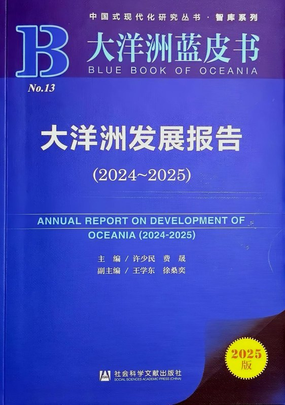
《大洋洲蓝皮书：大洋洲发展报告》大事记
第一作者（章节）署名撰写
以章节第一作者身份，连续两年撰写 2024-2025 与 2025-2026 两年度《大洋洲蓝皮书：大洋洲发展报告》大事记部分，为区域国别研究年度成果提供基础资料支撑。
归属：中山大学大洋洲研究中心
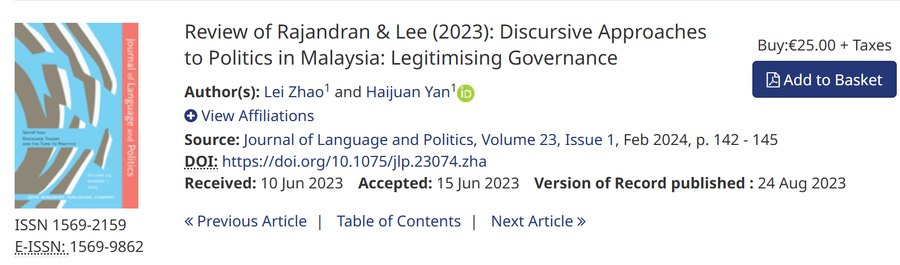
英文书评 Review of Rajandran & Lee (2023)
Discursive Approaches to Politics in Malaysia
独立撰写英文书评，发表于 SSCI 期刊 Journal of Language and Politics，署名第一作者。
期刊：Journal of Language and Politics
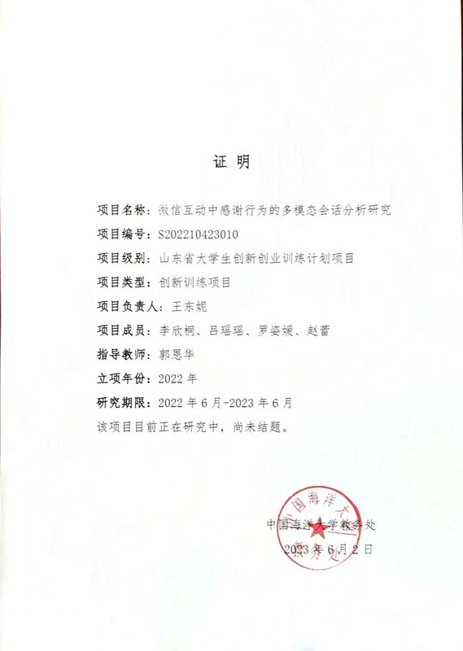
微信互动中感谢行为的多模态会话分析
省级大学生创新创业训练计划
参与对微信互动场景中文字、图片等多模态语料的会话分析研究，项目已通过省级结题验收。
状态：已通过省级结题验收
03 Skills
技能与个人特质
语言证书
资格证书
工具技能
个人特质
- 优秀的中英信息检索与数据分析能力，能够独立完成深度国别与行业研究报告。
- 负责守信、谦逊温和、善于沟通、抗压能力强、学习力强，团队意识与逻辑思维较强。
- 具备内容策划与视频传播能力，擅长数据复盘，可将专业内容转化为公众传播。
04 Experience
工作与实习经历
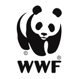
世界自然基金会 (WWF China)
生态旅游顾问2026.06 - 2026.07
- AI 知识库构建：参与 WWF「生态旅游 AI 工具」底层知识库搭建，中英双语检索并交叉验证各级权威机构信息，保障底层知识库内容准确规范且可追溯，支撑 AI 工具的高质量信息供给。
- 方案构思撰写：独立设计深度生态旅行目的地的全案信息搜集、旅行计划与标准化录入，覆盖特色景观、景点、旅行实用信息、基础设施与互动 5 大模块，构建完整的生态旅行知识框架。
- 设计成果交付：独立完成约 10 条深度目的地全案，交付的目的地案例被项目组选定为「官方标准模板」，建立可迁移、可复用的质量基线，支撑团队规模化、标准化交付。
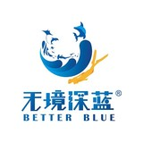
无境深蓝 (NGO)
项目实习生2026.02 - 2026.09
- 行动指南与 SOP 制定：搜集国内外资料，撰写「清洁水下家园」公民科学行动指南，搭建 SOP，制定数据录入规范与填写模板，统一监测口径。
- 数据分析与可视化：基于飞书多维表格处理数百条小梅沙水下海洋垃圾与珊瑚礁监测记录，并进行可视化呈现，独立撰写《小梅沙海底垃圾溯源报告》等科普性研究报告。
- AI 工具测试与优化：参与 AI 赋能水下垃圾搜集网站的使用测试，反馈问题清单并输出平台功能优化建议。
- 推文撰写与品牌传播：将专业生态知识转化为公众倡导文案，参与海底垃圾治理的大众传播工作，独立撰写「深蓝拾光」栏目「海草床科普」等宣传推文，推动专业化与品牌传播。
中山大学大洋洲研究中心
研究助理2025.03 - 2026.02
- 政策动态追踪：高频检索国内外权威新闻与数据，捕捉并翻译区域政策与生态动态，支撑中心研究选题，并连续参与撰写两年度《大洋洲蓝皮书：大洋洲发展报告》大事记部分。
- 会务策划与统筹：参与策划并举办「变乱交织的世界与稳定的大洋洲」研讨会，并参与记录 5 场大洋洲工作坊讲座，累计参与约 150 人的学术活动统筹与接待，形成涉外会务与跨部门协调经验。
- 新闻编译与撰稿：与国内外教授、官员开展讲座对谈（本人为对谈参与者），并撰写多篇活动新闻稿、宣传稿与活动纪要。
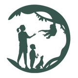
北京根与芽 YACC 青年绿色发展项目
社群运营官2026.05 - 2026.08
- 大区社群运营：负责华北东北、华中华南两大区（超 200 人）核心微信社群的日常维护、活跃氛围与社群管理，助力项目传播。
- 积分与数据管理：负责积分体系的记录、审核与复盘，统筹数据核查与运营闭环，积分追踪零差错。
- 运营成果交付：支撑社群「活跃成员留存率 ≥ 50%」核心运营指标，体现强数据敏感度与公益组织协作能力。
中国外文局翻译院 (CICG ATI)
翻译实习生2022.11 - 2022.12
- 翻译质量把控：翻译政治类、科技类中文文本并承担译文审校，保障输出准确规范、符合外文局对外发布标准，沉淀为可复用的翻译质量校验与统一术语风格，可直接用于同类内容产品的质检流程。
- 资料整理与核对：整理校对原始资料，按研究主题与目的重构源材料结构框架，使逻辑清晰、文字通顺，沉淀为可复用的素材库与内容框架。
新东方教育集团
人力实习生2024.03 - 2024.05
- 招聘全流程跟进：组织完善校园招聘与内部推荐等招聘渠道，发布信息、完成初筛、考察候选人资格、协助面试时间安排与注意事项通知，掌握 HR 全流程实务。
- 企业文化构建：协助完成企业文化相关工作，如福利发放、文娱活动策划与执行等。
牡丹江教育局（学校公派）
人事科实习2022.07 - 2022.08
- 公文通知核校：检查核对预发布政府文件与通知的文字准确性，保障公文零文字差错。
- 教师招聘协助：根据公立中小学的教师岗位空缺情况，制定招聘计划，协助完成教师的统一市内招聘，其中包括面试现场勘察和布置、面试者简历整理、回答面试者电话咨询等工作。
05 Projects & Community
项目经验与志愿共创
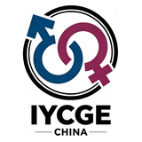
国际青年性别平等委员会（IYCGE）中国团队
Research 组成员
- 组织背景：组织汇聚来自 50+ 个国家和地区的大使，约每 40 天举办一次线上国际会议，所有国家的团队代表将围绕统一主题研究并发表 8 至 10 分钟研究演讲。
- 研究报告撰写：参与撰写英文《中国女性婚育与职场性别议题报告》，负责学术文献、数据梳理及影响分析模块，议题聚焦婚育预期、生育后职业中断、家庭照护与无偿劳动对女性职业发展的影响。
- AI 伦理实验：主导设计「生成式 AI 中的性别偏见：中国与国际 AI 模型的比较研究」实验，其中包括 prompt 设计、模型实验、语料标注等，个人承担 DeepSeek 模型测试执行与编码。
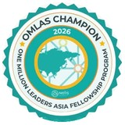
百万亚洲领袖计划（OMLAS）
2026 Champion
- 项目背景：OMLAS 为 OML Fellowship 的亚洲区域项目，由 NELIS 于 2021 年发起，旨在通过建立一个可持续的领导力网络，来连接、启发并赋能亚洲各地的青年。
- 入选网络与线上培训：入选百万亚洲领袖计划（OMLAS），与巴基斯坦、印度、孟加拉等多国青年领袖跨文化交流与协作，参与区域可持续发展议题研讨，掌握 SDG 与变革型领导力框架。
- 跨国合作与共创成果：与印尼、巴基斯坦青年领袖组队开展 AI 赋能 ESG 项目，在多元文化团队中推动前沿议题研究与方案共创，积累跨国协作经验。
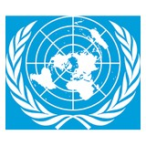
联合国志愿人员组织（UNV）
英汉翻译线上志愿者
岗位任务与成果：担任 DoA（Descriptions of Assignment）英汉翻译，协助项目管理办公室完成新一届 UNV-CYVA 遴选所需岗位描述文件的英译中工作，独立完成英译汉翻译工作。
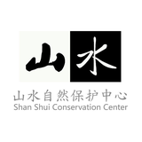
山水自然保护中心 海南雨林社区自然体验共创
志愿者
- 调研背景：海南热带雨林国家公园管理局主办、山水自然保护中心承办，地点为海南白沙黎族自治县青松乡（含苗村、青松村、拥处村）。
- 内容与做法：基于生态调查（以海南长臂猿为特色，动植物与景观）与黎苗人文走访（山兰稻种植、黎陶技艺），与村民及志愿者共创自然体验主题路线。
- 生态路线成果：产出「苗乡听猿行」「龙井溯溪行」「黎乡山兰行」3 条路线的社区生态向导与自然解说构想，将当地生态资源转化为可落地的旅游体验，并向所在村集体汇报确认。
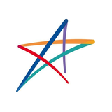
哔哩哔哩 x 美丽中国第九届梦想导师
线上支教志愿者
- 课程研发与授课：面向乡村学校中小学生开展线上海洋主题课程，参与课程整体设计与内容研发，同时承担授课，将专业知识转化为通俗科普，与成员协作增强课程互动性与参与感。
- 成果：所属团队获「优秀团队」称号；提升青少年海洋科学素养，体现课程研发与科普传播能力。
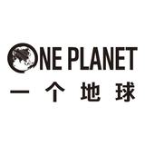
一个地球自然基金会
海滩垃圾清理志愿者
- 内容与做法：在广东省江门市参与实地海滩垃圾清理与分类，并深入周边社区号召居民参与。
- 成果：在一线完成生态保护与社区动员实践，通过实地走访考察「人与自然的边界」，理解生态保护与当地生计的张力，沉淀可持续旅游的在地认知。
自媒体内容创作者
Bilibili / 抖音 / QQ 短视频
全流程运营：独立完成账号定位、内容策划、拍摄剪辑与平台分发的全流程运营，坚持数据复盘优化选题，沉淀高粘性粉丝。
能力点：内容策划与制作、数据复盘、粉丝运营、跨平台分发，可迁移至品牌传播、科普内容与项目成果的公众触达。
2.5万+
B 站粉丝
3000万+
账号累计总播放
200万+
累计点赞量
160万+
单条原创最高播放
06 Training & Workshops
培训与项目历练
点击配图看大图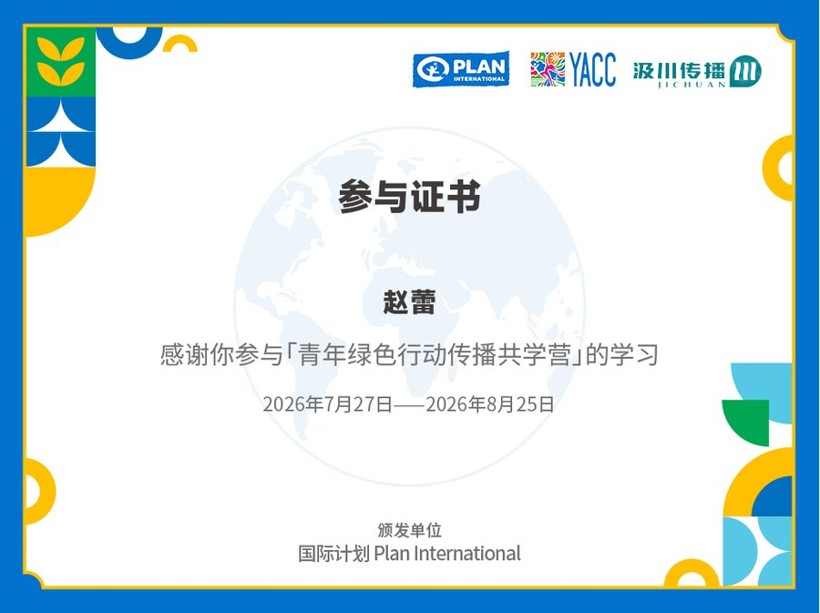
青年绿色行动传播共学营
国际计划 × 北京根与芽
聚焦气候变化、绿色发展与性别平等的 30 天线上共学，系统学习 IP 定位、个人知识库搭建、爆款文案、AI 辅助创作、短视频剪辑与粉丝培育等。
身份：营员（30 天线上）
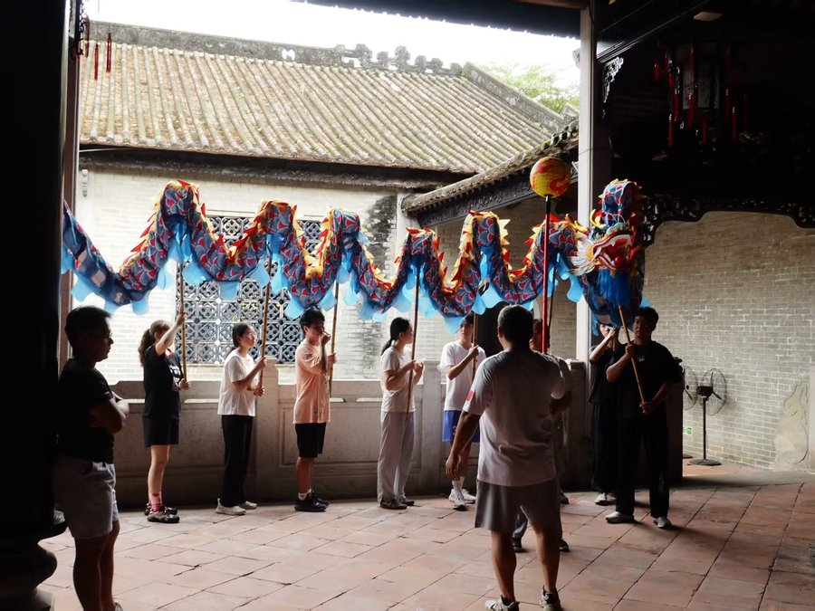
文化遗产传承与创新青年研习社
中山大学
深入珠海北山村，师从有 80 年历史的蔡李佛胜利龙狮团学习非遗舞龙，发掘在地少数群体与特色活动，积累非遗传承与在地人文素材。
身份：社员
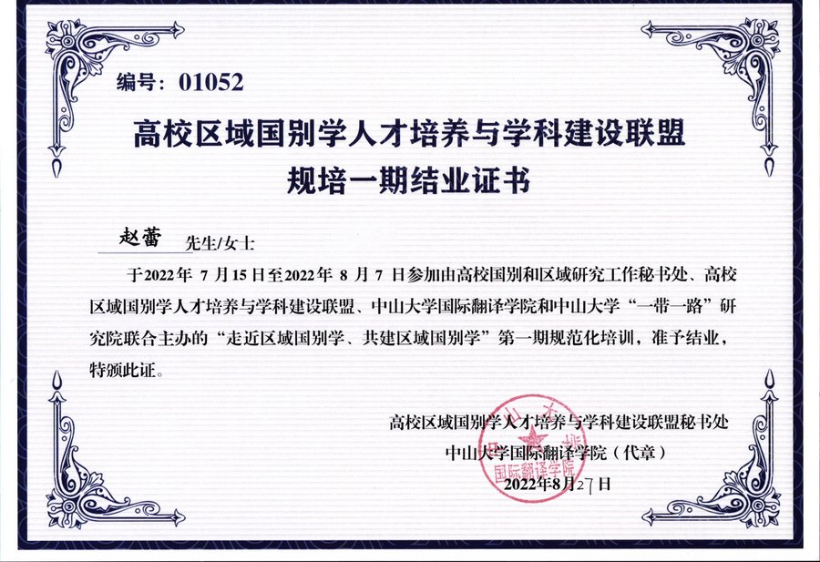
区域国别学人才培养与学科建设规培
高校区域国别学联盟
从政治学、语言学、历史学融合的跨学科角度系统认识区域国别学，学习研究方法论与学科理论，接受对象国研究专题训练。
身份：参训学员（获结业证书）
Let's connect! 👋😊
欢迎通过邮件或微信与我联系，探讨学术合作、项目倡导与交流。
© 2026 Lei Zhao (Millie). All rights reserved.
Designed with Vibe Coding